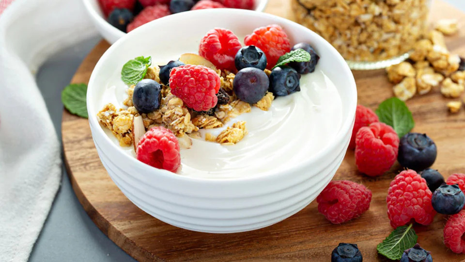

Yogurt con frutos secos
 ColaciónPreparación
- En un tazón mediano, vierte el yogurt griego.
- Pica las almendras y nueces en trozos pequeños, dejando algunas enteras para decoración si lo prefieres.
- Agrega todas las semillas y frutos secos picados al yogurt.
- Lava los arándanos y añádelos al tazón.
- Vierte la miel por encima del yogurt y los frutos secos.
- Espolvorea la canela por toda la superficie.
- Mezcla suavemente todos los ingredientes hasta que estén bien combinados, pero evitando aplastar los arándanos.
- Si prefieres, puedes reservar algunos frutos secos y arándanos para decorar por encima.
- Refrigera por 10-15 minutos antes de servir para que los sabores se integren mejor.
- Esta colación se puede preparar la noche anterior y guardar en un recipiente hermético en la nevera hasta por 24 horas, aunque es mejor consumirla fresca para evitar que los frutos secos pierdan su textura crujiente.